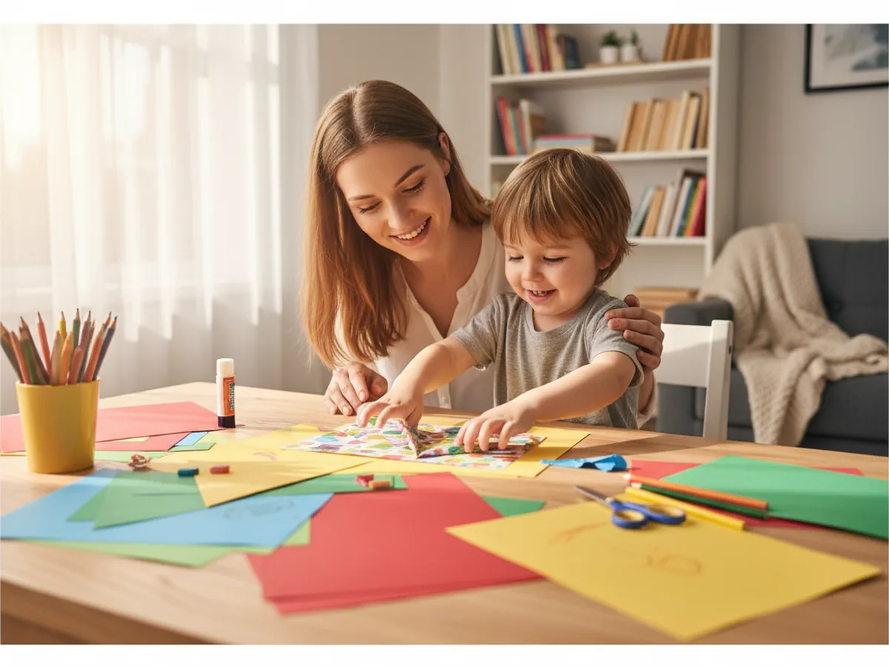
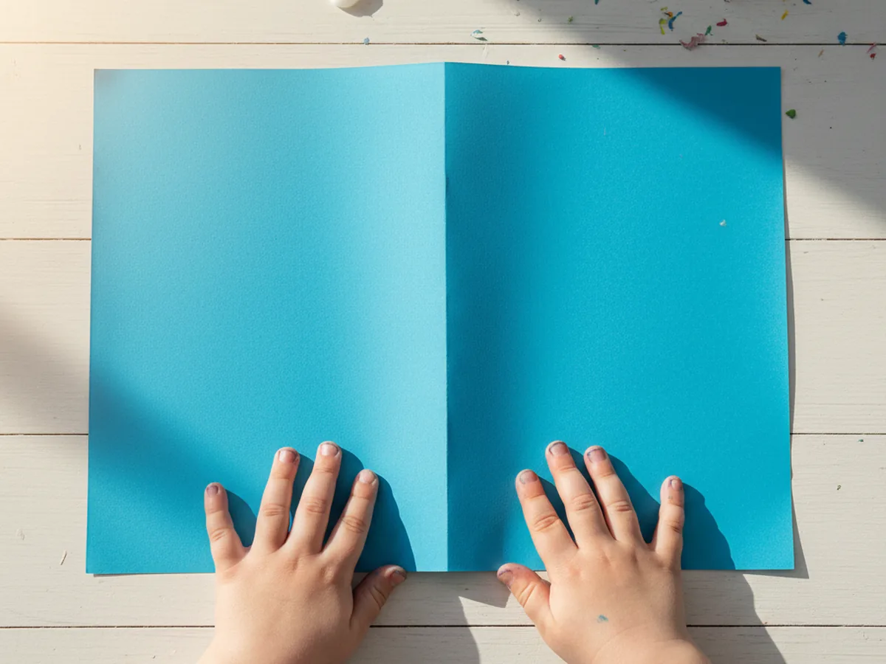
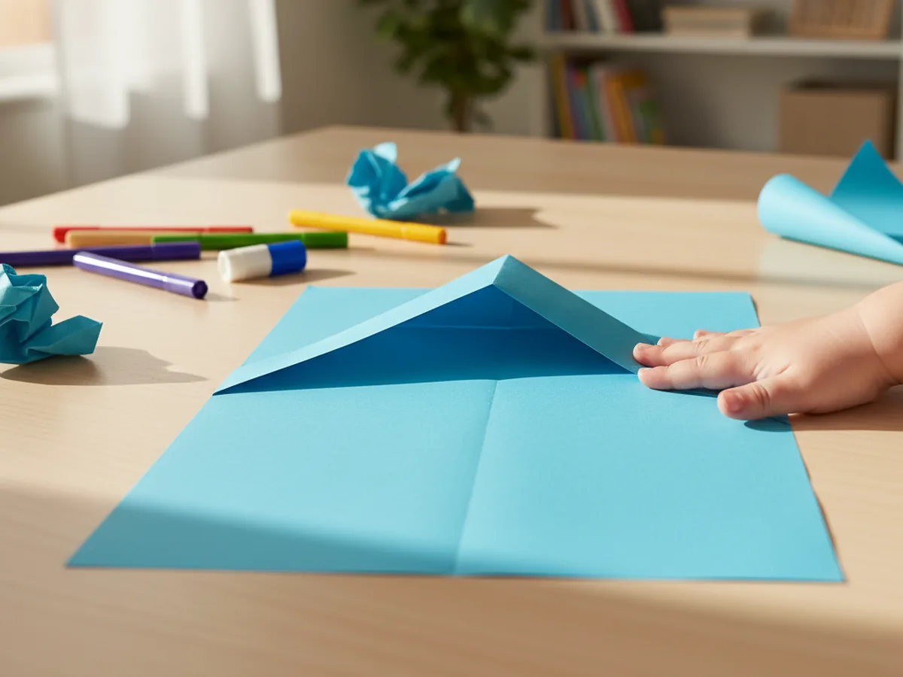
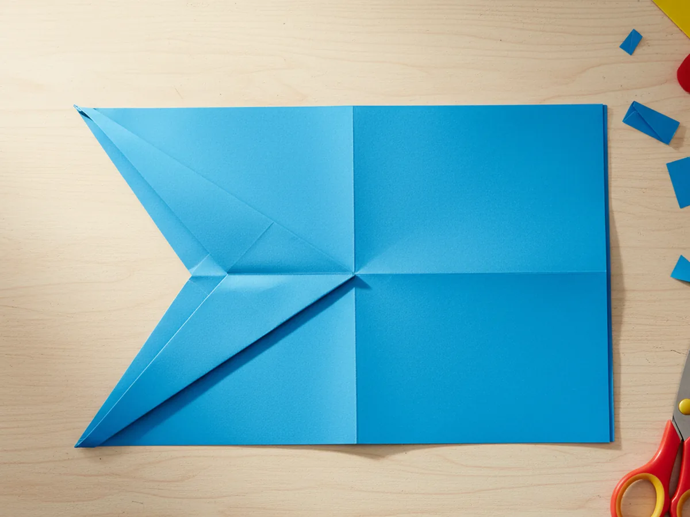
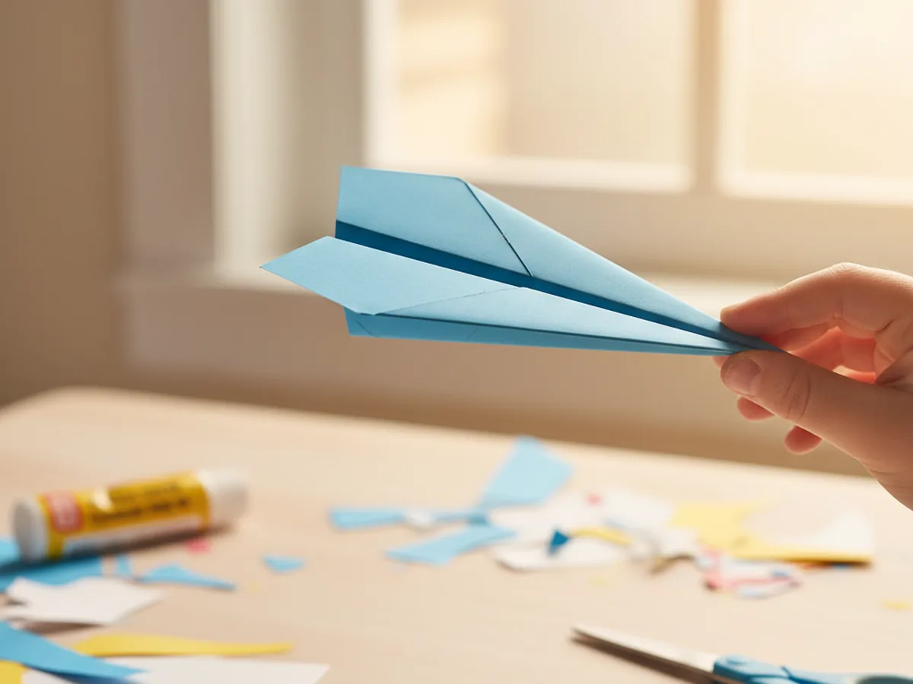
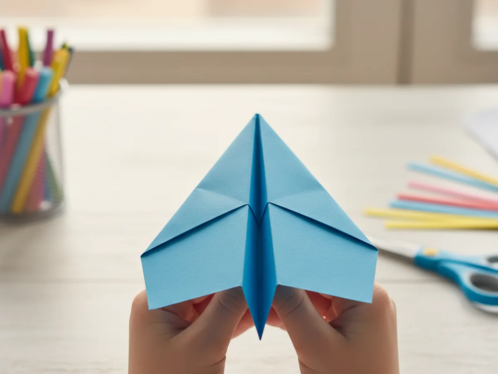
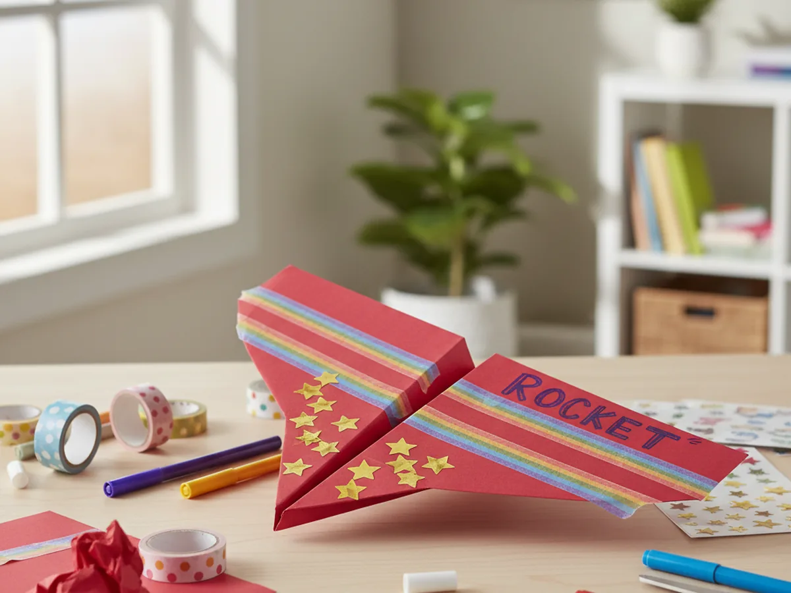

Few crafts are as instantly rewarding as a paper airplane craft. One sheet of paper, a few simple folds, and then your child gets to launch it across the room and watch it fly. That moment of pure delight never gets old, whether it is the first time or the fiftieth.
This tutorial teaches the classic dart, which is the most reliable and satisfying paper airplane design for young children. It is easy to fold, flies beautifully, and takes only about 15 minutes from start to finish. You can keep it simple with a plain white sheet or make it extra special with colorful paper, stickers, and washi tape stripes. Either way, the paper airplane craft is one of those rare activities that feels like play the whole time and ends with something that actually works. ✈️
Why Kids Love This Craft
There is something endlessly magical about folding a flat piece of paper and watching it become something that flies. Children who do this paper airplane craft feel a real sense of pride and accomplishment because the result is functional, not just decorative. They made it with their own hands, and it actually works.
The folding process itself is wonderful for young children. Each precise crease builds fine motor skills, hand-eye coordination, and spatial reasoning. Following steps in order to reach a working result also teaches patience and focus in the most enjoyable possible way. And because the instructions repeat the same basic motion several times, even younger kids can start to follow along after seeing it done once.
The decorating step is where personalities really shine. Give your child markers and stickers and watch them design a one-of-a-kind airplane that feels completely theirs. Then the flying test at the end turns the whole activity into a little celebration. You can count how far it flies, try different launching angles, or make a whole fleet of paper airplanes in different colors. The fun goes well beyond the craft table.

What You'll Need
Here is everything you need for this paper airplane craft. The good news is that it barely takes more than one sheet of paper to make something great.
- Colorful copy paper, bright-colored sheets are much more exciting to decorate and display than plain white.
- Fun sticker set, stars, dots, and shapes add great personality to the finished airplane.
- Washi tape, colorful stripes of washi tape along the wings make airplanes look really impressive.
- Ruler, helpful for keeping folds straight, especially for younger children.
- Washable markers, for adding names, lightning bolts, or any design your child dreams up.
Step-by-Step Instructions
This paper airplane craft comes together in six easy steps. Take it slowly with young ones and enjoy each fold together.
Step 1: Prepare Your Paper and Crease the Center
Place your sheet of paper on the table horizontally, with the long edge closest to you. Fold it in half by bringing the top long edge down to meet the bottom long edge exactly. Press the crease firmly all the way along with your fingernail, then unfold the paper flat again. You now have a clear center crease running down the full length of the paper. This line is your guide for every fold that follows, so take a moment to make it as sharp and straight as possible.
If your child is young, let them run their finger along the fold to help press it down. Feeling that satisfying crisp crease is part of what makes this paper airplane craft so tactilely rewarding right from step one.

Step 2: Fold the Top Corners Down to the Center
Turn the paper so one of the short edges is at the top facing you. This short edge will become the nose of the airplane. Take the top-right corner and fold it diagonally down so that the top edge of the paper lines up exactly with the center crease. Press that fold firmly. Then do exactly the same on the left side. Bring the top-left corner down so the left edge meets the center crease too.
When both folds are done, the top of the paper now forms a neat triangle point, like the tip of a rocket. This is the classic beginning of every dart-style paper airplane, and kids always get excited when that nose starts to appear.

Step 3: Fold the Slanted Edges In Again
Now you are going to repeat a very similar fold to make the nose even sharper and more aerodynamic. Take the right slanted edge of the paper and fold it inward again so it lines up with the center crease. Press firmly. Then fold the left slanted edge in the same way to meet the center crease on the other side.
The nose of your paper airplane craft is now much longer and more pointed than before. Both sides of the paper should be neat and symmetrical. Take a moment here to check that both sides match. If one side is slightly wider than the other, gently adjust the fold before pressing it flat. Symmetry is what makes a paper airplane fly straight rather than veer off to one side.

Step 4: Fold the Airplane in Half
Flip the whole airplane over so the folded layers face down against the table. Now fold the paper in half along the center crease, bringing the two long halves together so they close like a book. The pointed nose should stay perfectly aligned at the front. Press the fold firmly along the full length of the airplane so it is crisp and flat.
Hold the folded shape up and look at it from the side. It should look like a narrow triangle with a sharp point at the front. This is your airplane body, and from here things start to feel very real for excited young crafters. The form is clearly becoming something that could fly. 🛫

Step 5: Fold Down the Wings
Hold the airplane with the nose pointing away from you and the folded spine of the plane facing down. You will now fold both wings down to create the flat flying surfaces that make this design work so well.
Starting from the nose, fold the top layer of the airplane down about one inch from the spine, keeping this fold running parallel to the bottom edge. Press the wing fold all the way from nose to tail. Flip the plane over and make the exact same fold on the other side. When you open the wings out so they sit flat and level, the airplane shape should be immediately recognizable. Both wings must match in size and angle for the airplane to fly straight.

Step 6: Decorate and Fly
Now for the most fun part. Lay the finished airplane flat on the table and let your child decorate it however they want. Washi tape stripes along the wings look especially beautiful and also help hold the folds in place. Stickers, marker-drawn flames, lightning bolts, a name, or even a little pilot window drawn near the nose all add so much personality.
Once the decorating is done, hold the airplane at the center fold near the back of the plane, angle it slightly upward, and give it a smooth, firm throw. Watch it glide across the room! Try different throwing strengths and angles to see what makes it fly the farthest. This little flying test at the end turns the paper airplane craft into a full activity that kids want to repeat again and again. 🎉

Variations to Try
Whole Fleet: Once your child has made one airplane, suggest making a whole fleet in different colors. Line them all up for a group photo before launch, then hold a distance contest to see which design flies the farthest. Kids who start with one often end up making five or six in a single afternoon.
Toddler-Friendly Version: For children under three, skip the second set of corner folds in Step 3 and go straight from Step 2 to Step 4. The airplane will be slightly less sharp at the nose but still flies well and is much easier for tiny hands to manage. Pre-folding the crease for them also makes the whole process smoother and far less frustrating.
Themed Airplane: Turn the craft into a themed activity by decorating the airplane to match a book, character, or season your child loves. A red airplane with white polka dots, a rainbow-striped one for spring, or one covered in tiny heart stickers for Valentine's Day all make great takes on the basic paper airplane craft template.
Final Thoughts
A paper airplane craft is one of the simplest things you can do with your child, and somehow it always feels like an adventure. The folding is satisfying, the decorating is creative, and the flying is pure joy. You walked in with a single sheet of paper and walked out with something that soars. That combination of making something with your hands and then watching it actually work is hard to beat, and kids never forget it.
Whether this is the first paper airplane your child has ever made or just the latest in a long series, enjoy every moment of this one. Some of the sweetest memories come from the simplest crafts.
More Crafts You'll Love
If your child enjoyed this folding craft, these paper activities are sure to be a hit too.